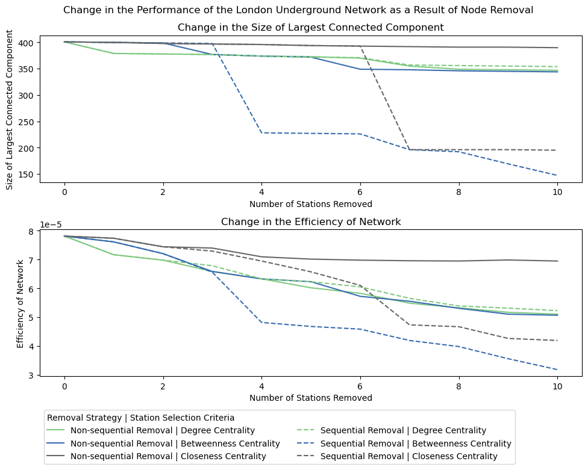
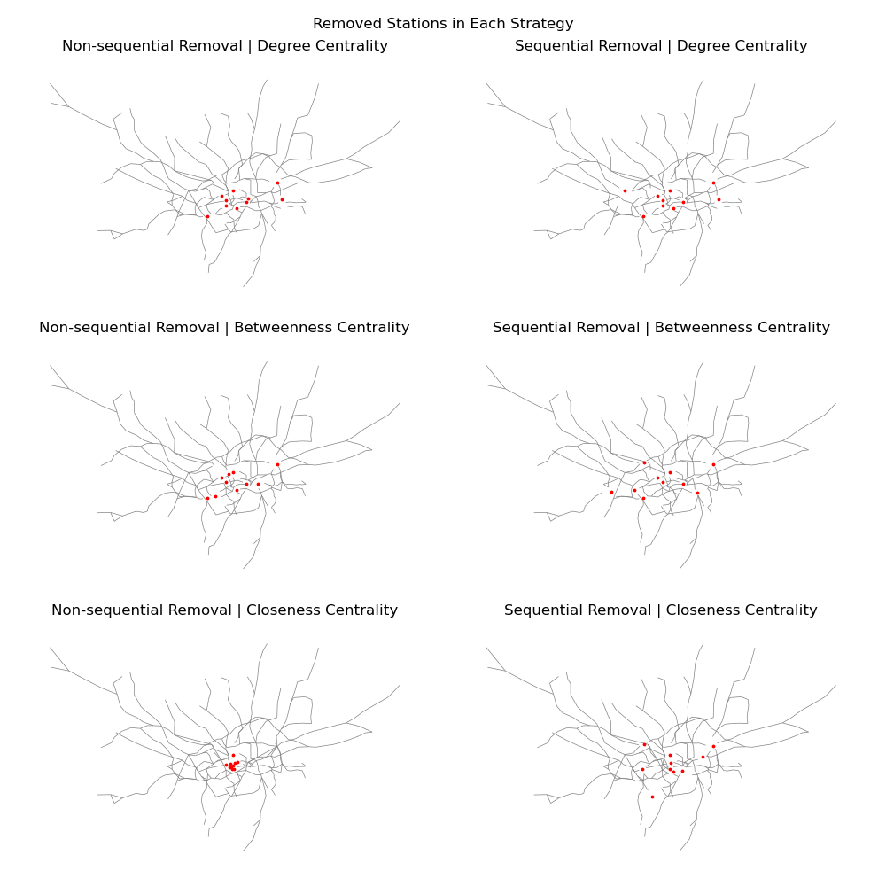
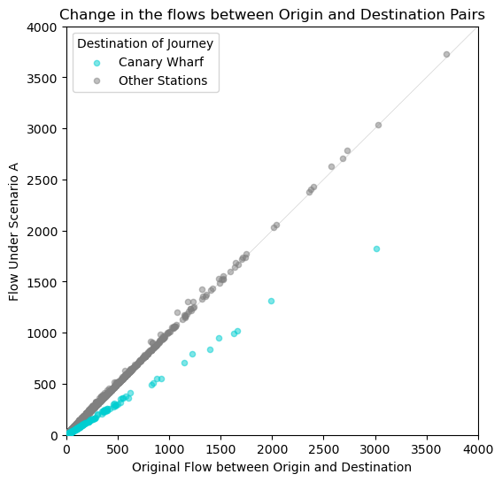
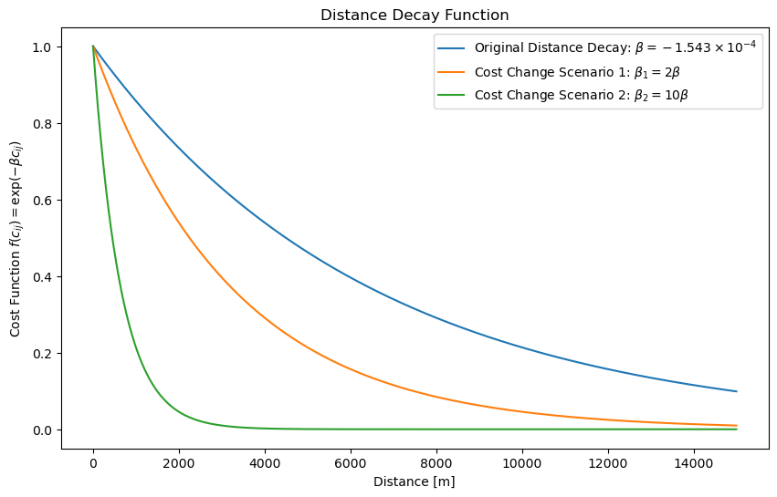
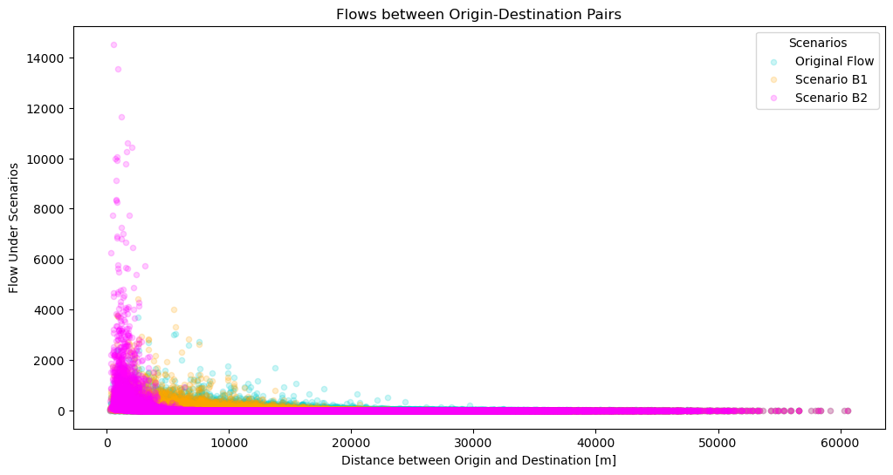

Urban Simulation Report
Part 1: London’s Underground Resilience
The first part of this report aims to address the resilience of the London Underground using network analysis.
Topological Network
Centrality Measures
Centrality measures are characteristics of nodes showing their importance in various aspects. In this section, we will identify nodes on the network with the highest centrality in the following measurements: degree centrality, closeness centrality, and betweenness centrality. The 3 central measures that I will cover in this report are: degree centrality, betweenness centrality, and closeness centrality. We will consider a network of \(n\) nodes, and the number of links between nodes \(i\) and \(j\) will be denoted as \(A_{ij}\).
Degree centrality is the number of links that are connected to each node. Considering the underground as an undirected graph, the degree centrality \(k_i\) for node \(i\) is calculated as
\[ k_i = \sum_{j} A_{ij} \tag{1}\]
In the context of the underground network, the degree corresponds to the number of lines that serve each station counting 1 for each direction. A high degree centrality indicates there are many lines that serve the station, thus identifies importance of the station as a transit hub that allows for transfer between multiple lines.
The stations with the highest degree centrality are shown in Table 1. These stations match the characteristics of being a large transfer station.
| Rank | Station | Degree |
|---|---|---|
| 1 | Stratford | 9 |
| 2 | Bank and Monument | 8 |
| 3 | King’s Cross St. Pancras | 7 |
| 3 | Baker Street | 7 |
| 5 | Waterloo | 6 |
| 5 | West Ham | 6 |
| 5 | Canning Town | 6 |
| 5 | Liverpool Street | 6 |
| 5 | Earl’s Court | 6 |
| 5 | Green Park | 6 |
| 5 | Oxford Circus | 6 |
Betweenness centrality is defined by the number of shortest paths that run through the node (or link). The betweenness centrality \(x_i\) can be calculated as
\[ x_i = \sum_{st} \frac{n^i_{st}}{g_{st}} \tag{2}\]
where
\[ n^i_{st} = \begin{cases} 1 \quad (\text{if node } i \text{ is on geodesic from } s \text{ to }t)\\ 0 \quad (\text{otherwise}) \end{cases} \]
and \(g_{st}\) is the total number of geodesic paths from \(s\) to \(t\). To normalised, the raw value should be divided by all possible combinations of shortest paths between the other \(n-1\) nodes: \(\frac{(n-1)(n-2)}{2}\). High betweenness centrality on the underground shows there are many passengers travelling through the station during their journeys, which are stations en route of connecting the suburban areas with the city centre, or stations on short-distance routes. When this station becomes inaccessible, a large amount of people will be affected.
The stations with the highest betweenness centrality are shown in Table 2.
| Rank | Station | Betweenness Centrality |
|---|---|---|
| 1 | Bank and Monument | 17,602 |
| 2 | King’s Cross St. Pancras | 16,780 |
| 3 | Stratford | 14,548 |
| 4 | Baker Street | 13,200 |
| 5 | Oxford Circus | 12,584 |
| 6 | Euston | 12,401 |
| 7 | Earl’s Court | 11,454 |
| 8 | Shadwell | 11,127 |
| 9 | Waterloo | 10,407 |
| 10 | South Kensington | 10,304 |
Closeness centrality is the inverse of the main geodesic distance \(l_i\) of one node to all the other \(n-1\) nodes. Given the geodesic distance between nodes \(i\) and \(j\) as \(d_{ij}\), the closeness centrality \(C_i\) is calculated as
\[ C_i = \frac{1}{l_i} = \frac{n-1}{\sum_{j} d_{ij}} \tag{3}\]
A high closeness centrality in a rail network indicates the station is within a short distance from all the other stations, located at the physical centre of the network. Provided that the network spreads out radially from the city centre, the stations with highest closeness centrality are assumed to be located within the city centre, as illustrated by the high-ranked stations in London shown in Table 3. These stations are located at the West End area - which can be assumed as the central area of London.
| Rank | Station | Closeness Centrality \((\times 10^{-5})\) |
|---|---|---|
| 1 | Holborn | 7.926 |
| 2 | King’s Cross St. Pancras | 7.914 |
| 3 | Tottenham Court Road | 7.891 |
| 4 | Oxford Circus | 7.883 |
| 5 | Leicester Square | 7.837 |
| 6 | Picadilly Circus | 7.834 |
| 7 | Charing Cross | 7.833 |
| 8 | Chancery Lane | 7.825 |
| 9 | Covent Garden | 7.810 |
| 10 | Embankment | 7.802 |
Impact Measures
For impact measurement, we considered the delta centrality, a concept introduced by Latora and Marchiori (2007) that compares the performance of the whole network when a node is removed from the network in question. For a performance measure \(P\) of the network \(G\), the delta centrality \(C^{\Delta}_i\) of node \(i\) is defined as
\[ C^{\Delta}_i = \frac{\Delta P}{P} = \frac{P(G) - P(G')}{P(G)} \]
where \(G'\) denotes the network where node \(i\) is removed. This can be applied to any performance measure \(P\) - we have considered the measures summarised in Table 4.
| Performance Measure \(P\) | Explanation |
|---|---|
| Size of Largest Connected Component | The size of the largest connected component shows the connectivity of the network. A smaller number indicates stations are disattached from the main network, leading to less connectivity. |
| Network Efficiency | Efficiency measure proposed by Latora and Marchiori (2001), calculated as \(E(G) = \frac{1}{n(n-1)}\sum_{i \ne j} \frac{1}{d_{ij}}\). A high value indicates a low average shortest path length between nodes, and a low value represents nodes are further apart or disconnected. Unlike the average shortest path length, this measure can be calculated for disconnected networks. Note the nx.global_efficiency() function cannot incorporate edge length, a custom function was defined to calculate this value. |
These measures can be applied to any transport network, especially the average shortest path length is directly addressing the puropose of transport systems of connecting different areas. The number of cycles also impact the resilience of transport networks, although may not be applicable for road networks that inherently have a large number of cycles. An applicable example of these measures outside the London underground is the destruction of the subway network in New York City after the September 11 attacks, which resulted in the closure of multiple stations and line segments (Wyatt, 2002; Paaswell, 2012).
Node Removal
The removal of nodes with high centrality and the impact on the performance of the network are considered. For each centrality measure, two strategies are used to remove 10 nodes from the network: a non-sequential strategy removes nodes in order that appears in the rank tables (Table 1; Table 2; Table 3), while a sequential strategy removes the node with the highest centrality when recalculated after the previous node removal step. The stations removed for each centrality measure are shown in Table 5.
Table 5: Stations removed for impact assessment for each centrality measure and strategy. For each scenario, the stations were removed one at a time from the top of the table to the bottom.
| Non-sequential | Sequential |
|---|---|
| Stratford | Stratford |
| Bank and Monument | Bank and Monument |
| King’s Cross St. Pancras | Baker Street |
| Baker Street | King’s Cross St. Pancras |
| Waterloo | Oxford Circus |
| West Ham | Earl’s Court |
| Canning Town | Canning Town |
| Liverpool Street | Waterloo |
| Earl’s Court | Turnham Green |
| Green Park | Green Park |
| Non-sequential | Sequential |
|---|---|
| Bank and Monument | Bank and Monument |
| King’s Cross St. Pancras | King’s Cross St. Pancras |
| Stratford | Canada Water |
| Baker Street | West Hampstead |
| Oxford Circus | Earl’s Court |
| Euston | Oxford Circus |
| Earl’s Court | Shepherd’s Bush |
| Shadwell | Bakes Street |
| Waterloo | Acton Town |
| South Kensington | Stratford |
| Non-sequential | Sequential |
|---|---|
| Holborn | Holborn |
| King’s Cross St. Pancras | King’s Cross St. Pancras |
| Tottenham Court Road | Embankment |
| Oxford Circus | Waterloo |
| Leicester Square | London Bridge |
| Picadilly Circus | West Hampstead |
| Charing Cross | Clapham Junction |
| Chancery Lane | Mile End |
| Covent Garden | Stratford |
| Embankment | Notting Hill Gate |
The change in performance measures caused by the node removal is as illustrated in Figure 1, and the final network is mapped in Figure 2


Discussions
Based on the two performance measures, we can conclude that the strategy more effective to study resilience is the sequential removal. This strategy evaluates the network after the previous removal, thus able to identify the most important node at the point of removal. Since the characteristics of the network change after removing one node, the node with the next highest centrality measure may not be the most important node after removal of one node. One obvious example can be observed in the non-sequential removal based on highest closeness centrality measures, where the stations located in the centre of London are removed altogether; the impact to the network after the removal of the first few nodes have significantly lowered the importance to the network in this area. By assessing the importance of node at each step, the sequential removal is capable of identifying the hidden nodes that gain importance when the most obvious nodes have been removed, which may need improvements if we were to prepare for emergency situations.
Comparing between the centrality measures, the betweenness centrality reflects the importance of stations the most. When removing multiple stations based on highest centrality measures, following the betweenness centrality lead to the largest decrease in both of the performance measures. Since a high betweenness centrality indicates high number of flows through the node, removing this node will force the flows to divert using different routes, requiring a higher cost to reach the destination. Given that connecting two points is the fundamental function of a transport network, the betweenness centrality directly addresses the importance regarding this aspect.
It is worth noting that the degree centrality has identified the first station to remove that impacts the performance the most, and has outperformed the closeness centrality until the 6th station. Further investigation is required to identify whether the stations at the centre of the network (high closeness centrality) or terminal stations with many lines operating (high degree centrality) is more critical to the performance of the whole network.
For the comparison of the impact measure, the efficiency appears to be a better evaluation of the performance of the network. The size of the largest connected component does not take into account how well-connected the nodes are within the largest component, therefore unable to assess the impact of station removal unless the removal disconnects a portion of the network. In an underground network where multiple lines intersect at multiple points, removal of a few stations may not always disconnect stations from networks (especially in the central part of the network) but may impact the efficiency. On the other hand, efficiency measures the actual distance between origin and destination, thus the impact on the actual flow within the network is more accurately reported.
Flows: Weighted Network
In this section, a weighted network with the flows assigned to the links between stations will be considered. Based on the Transport for London OD data (Transport for London, 2021), the morning peak flows have been assigned assuming that all flows use the shortest path, considering the length of each edge. Hereinafter, \(w_{ij}\) is the flow on the link between adjacent stations \(i\) and \(j\) (sum of both directions).
Centrality Measures
We will consider whether the 3 centrality measures we have identified in the previous section need adjustments to be applied in the context of the weighted network.
The degree centrality as the number of connected stations continues to be a valid figure. Theoretically, a flow-weighted version of degree centrality Equation 1 can be defined as
\[ s_i = \sum_j A_{ij}w_{ij} \tag{4}\]
which is a measure defined as the strength \(s_i\) (Lee et al., 2008). This quantifies the amount of flow that passes through each node - which is highly related to the betweenness centrality in the weighted context.
The betweenness centrality considering flows, given \(T_{ij}\) as the number of flows from node \(i\) to \(j\), can be proposed as follows:
\[ x'_i = \sum_{st} \frac{n^i_{st}}{g_{st}}T_{st} \tag{5}\]
Recalling the strength Equation 4 was the sum of all flows using the links that connect to the node, and Equation 5 only considers the flows that passes through (not beginning nor terminating), these two centrality measures fulfill the following relationship
\[ s_i = x'_i + O_i + D_i \]
where \(O_i, D_i\) is the number of flows originating and terminating at node \(i\), respectively.
When considering the closeness centrality with regards to the number of flows, simply considering \(T_{ij}\) in Equation 3 as \(C'_i = \frac{\sum_j T_{ij}}{\sum_j T_{ij}d_{ij}}\) will return the average distance travelled by the user of the station, which does not correspond to the principle of closeness centrality. (This figure may be larger in the city centre where people are willing to travel from far away, or at the periphery of the network where passengers need to travel long distances in general.) Instead, by defining the social distance of links as the inverse of the flows, and \(u_{ij}\) as the shortest social distance between nodes \(i\) and \(j\), the closeness centrality considering weights can be defined as
\[ C''_i = \frac{n-1}{\sum_j u_{ij}} \]
Impact Measures
We will consider the need for adjusting the impact measures in Table 4 when considering the passenger flows.
The size of the largest connected components is a valid measure in a weighted network, since it does not consider the flows between nodes. If the weight of the edges are to be incorporated to quantify the connected-ness of the nodes, a similar performance measure would be the maximum number of journeys that can be completed within a connected component.
For the network efficiency, each of the distances should be weighted according to the number of passengers who travel between the two nodes. The efficiency should also account for the flows between points. The equation in Table 4 should be adjusted using \(T_{ij}\) as:
\[ E(G) = \frac{1}{n(n-1)} \sum_{i \ne j} \frac{T_{ij}}{d_{ij}} \]
Node Removal
Part 2: Spatial Interaction Models
In the second part, we will analyse the OD matrix of the London Underground. The variables will be denoted as follows:
- \(T_{ij}\): estimated flow from station \(i\) to \(j\)
- \(T\): total flow within a network, thus \(T = \sum_{i,j} T_{ij}\)
- \(d_{ij}\): distance between stations \(i\) and \(j\) - the cost function is a function of \(d_{ij}\) hence denoted as \(f(d_{ij})\)
- \(O_i\), \(D_j\): attractors (often population) at the origin and destination
Models and Calibration
Family of Spatial Interaction Models
The family of spatial interaction models are as follows:
The unconstrained model only constrains the model with matching the total flows with the observed value, written as
\[ T_{ij} = K O^{\alpha}_i D^{\gamma}_j f(c_{ij}) \]
where \(K\) is the constant
\[ K = \frac{T}{\sum_i \sum_j O^{\alpha}_i D^{\gamma}_j f(d_{ij})} \]
so that the total number of journeys are constrained.
The singly constrained model constrains the total number of observations for each component at the origin or the destination. The origin constrained model fixes the total number of journeys at the origin, as:
\[ T_{ij} = A_i O^{\alpha}_i D^{\gamma}_j f(d_{ij}) \tag{6}\]
The parameter \(A_i\) is determined so that the total at the origin is constrained, that is:
\[ \sum_j T_{ij} = O_i \therefore A_i = \frac{1}{\sum_j D_j f(d_{ij})} \]
Similarly, the destination constrained model constrains the total at the destination.
\[ T_{ij} = O^{\alpha}_i B_j D^{\gamma}_j f(c_{ij}) \quad \text{where } \left (B_j = \frac{1}{\sum_i O_i f(c_{ij})} \right) \]
The doubly constrained model constrains both the total at the origin and destination.
\[ T_{ij} = A_i O^{\alpha}_i B_j D^{\gamma}_j \exp(-\beta d_{ij}) \tag{7}\]
Calibration of Cost Function
The dataset used for analysis have the following data for every origin-destination pair for the London Underground Stations.
- population of origin
- jobs at the destination
- distance between origin and destination
- flow from the origin to the destination
Using this dataset, we will use the doubly constrained model to estimate the best cost function and parameters by comparing with the observed flow. Constraining both the total journeys for both the origin and destination will enable the full utilisation of observed data, enabling a most accurate calibration of the cost function.
The doubly constrained model after a logarithm transformation of Equation 7 into a Poisson expression can be written as:
\[ \ln(T_{ij}) = \ln A_i + \ln O^{\alpha}_i + \ln B_j + \ln D^{\gamma}_j + \ln f(d_{ij}) \\ \]
We will compare the negative exponential and inverse power relationships as the cost function \(f(d_{ij})\) as follows:
\[ f(d_{ij}) = \begin{cases} \exp(-\beta d_{ij}) \text{ (Negative Exponential)} \\ d^{-\beta}_{ij} \text{ (Inverse Power)} \end{cases} \]
For each cost function, we have run the Poisson Regression to calculate the optimal parameter \(\beta\).
| Cost Function | Parameter \(\beta\) | \(R^2\) value |
|---|---|---|
| Negative exponential \(f(d_{ij}) = \exp(-\beta d_{ij})\) | \(\beta = 1.543 \times 10^{-4}\) | \(R^2 = 0.4979\) |
| Inverse Power \(f(d_{ij}) = d^{-\beta}_{ij}\) | \(\beta = 9.096 \times 10^{-1}\) | \(R^2 = 0.4077\) |
From these results, the negative exponential model for the cost function has a better fit to the observed flows. When considering the scenarios, the cost function
\[ f(d_{ij}) = \exp(-\beta d_{ij}) \quad (\beta = -1.543 \times 10^{-4}) \tag{8}\]
will be used.
Scenarios
The scenarios we will observe in this report are summarised in Table 6.
| Scenario | Explanation |
|---|---|
| Scenario A | Jobs at Canary Wharf decrease by 50 % |
| Scenario B | Increase in cost of transport - considering 2 parameters |
Since scenario A involves the change in the characteristics of the destination, the origin constrained model is used for the analysis to preserve the number of commuters starting their journeys in each area.
Calibration of \(\gamma\)
Since the origin-constrained model will be used for the analysis of the scenarios, the gamma variable introduced in Equation 6 must be calibrated before applying to the new scenarios. \(\gamma\) with the highest R-squared value for estimating the original flow will be used, resulting as follows:
\[ \gamma = 7.556 \times 10^{-1} \quad (R^2 = 0.4680) \tag{9}\]
Scenario A
We will first decrease the number of jobs at Canary Wharf by 50%, from the original 58,772 to 29,386. Using the origin-constrained model, the procedure is as follows:
- Calculate the flow based on the origin-constrained model \(T_{ij} = A_i O_i D^{\gamma}_j \exp(-\beta d_{ij})\) to retrieve the optimal \(\gamma\) value for this dataset. The value for parameters \(\beta, \gamma\) is derived from Equation 8 and Equation 9.
- Reduce the number of jobs at Canary Wharf (transform \(D_j\) into \(D'_j\))
- Recalibrate the adjusted \(A'_i\) parameter with the new distribution of using the relationship \(A'_i = \frac{1}{\sum_j D'^{\gamma}_j f(d_{ij})}\)
- Calculate the new flows using the relationship \(T'_{ij} = A'_i O_i D'^{\gamma}_j \exp(-\beta d_{ij})\)
Using the origin constrained model, we will observe how the destination of commuters changed in reaction to the decrease in jobs in Canary Wharf.
We have observed a significant drop in the number of journeys terminating at Canary Wharf from 47,690 in the original simulation to 29,496 in scenario A, which is 61.9 % of the original amount. As observable from Figure 3, the decrease in the flows to Canary Wharf occured evenly among all origins, and has been redistributed into other destinations.

Scenario B
We will consider 2 scenarios for the change in the cost of transport. Given the original parameter as \(\beta\), the parameters \(\beta_1, \beta_2\) for the two scenarios B1 and B2 will be modified as shown in Equation 10 and Figure 4.
\[ \begin{cases} \beta_1 = 2 \beta \\ \beta_2 = 10 \beta \end{cases} \quad (\beta = -1.543 \times 10^{-4}) \tag{10}\]

The flows between origin-destination pairs for each scenario, plotted by distance of journeys, are shown in Figure 5. As the \(\beta\) increases, the longer distance journeys are disencouraged, and the distribution of the distance of journeys become negatively skewed.

Discussion
In this section, we will discuss the impact of each scenario on the distribution of flows in the underground network. The measurements summarised in Table 7 are considered to examine the changes that occured as a result of each scenario.
| Measurement | Explanation |
|---|---|
| Quantity of change in destination \(T_{\text{diff}}\) | The number of flows that have different destination compared to the original scenario. A larger number of change in destination indicate larger impact. |
| Mean distance of journeys \(\bar{\delta^X}\) | The mean distance of all journeys simulated in each scenario. A larger change in the distance compared to the original simulation indicate larger impact. |
For each scenario, the values for these measurements are calculated as shown in Table 8. The number of destinations changed and the change in the mean distance of journeys both indicate that scenario B2 had the largest impact on the number of flows, and scenario A being the least impactful.
| Scenario | \(T_{\text{diff}}\) | \(\bar{\delta}\) [m] |
|---|---|---|
| Scenario A | 18,193 (1.2 % of total flows) | 8,579 |
| Scenario B1 | 346,503 (22.47 %) | 6,030 |
| Scenario B2 | 1,222,191 (79.25 %) | 1,613 |
| Original Simulation | Total flows: 1,542,283 | 8,583 |
The intervention to the travel cost (scenario B) directly impacts all OD pairs, while the reduction of jobs in one area (scenario A) only impacts journeys that end at the station affected. This different nature of the interventions dictate the magnitude of change it causes; thus scenario B has a larger impact on the flows on the network as a whole. Recalling the impact of scenario A on Canary Wharf was a 39 % decrease in the total inflows, this figure falls between scenarios B1 and B2 in terms of \(T_{\text{diff}}\). Since \(\bar{\delta}\) remains unchanged the impact on Canary Wharf is difficult to compare between scenarios A and B1, scenario B2 has the largest impact even if the focus is on Canary Wharf. To conclude, a drastic impact on the cost function has more impact throughout the network compared to a large change in the demand in a particular area. Impact of the actual changes in the underground fares that occured should be investigated to compare with the results of our model.
Word count: x words
GitHub repository (as hyperlink): Urban_Simulation_Report